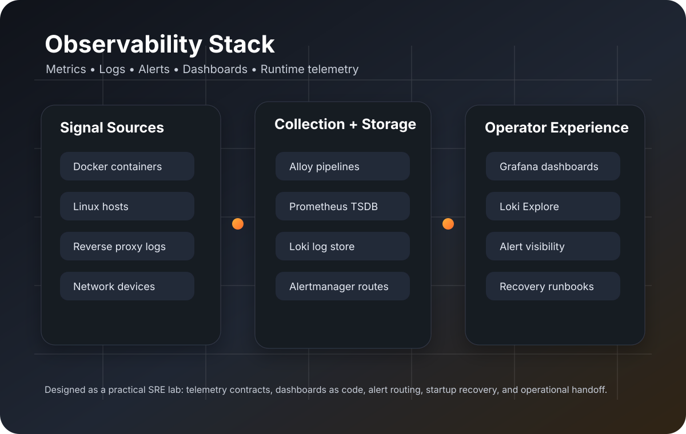
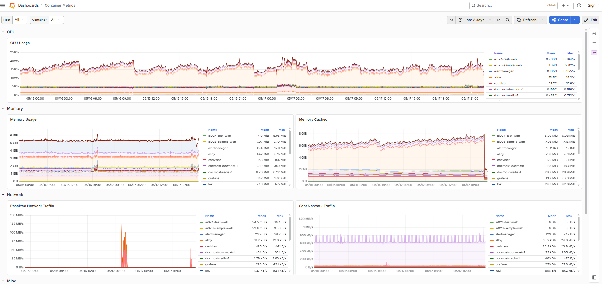
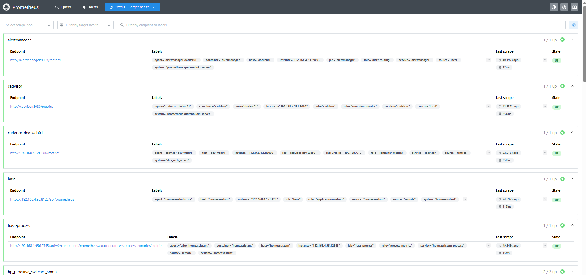
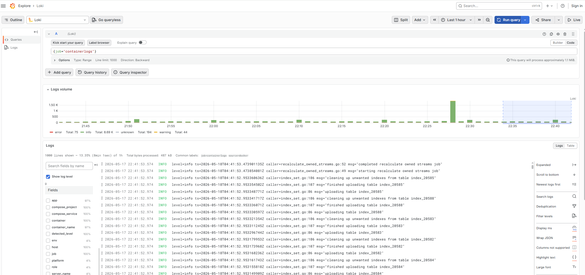
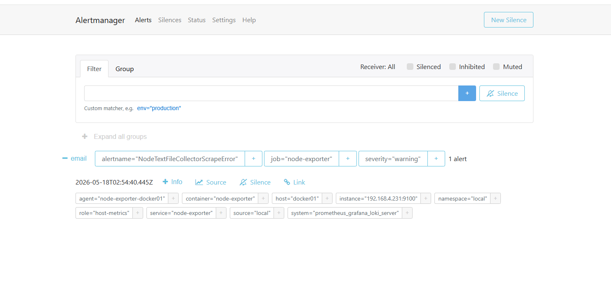

Portfolio Case Study
Grafana, Loki, Prometheus, Alloy Monitoring Stack
A practical SRE observability platform for metrics, logs, dashboards, alert routing, service recovery, and operational handoff.

Project Overview
This project centralizes infrastructure telemetry with Grafana dashboards, Prometheus metrics, Loki logs, Alloy collection, Alertmanager routing, Docker Compose operations, and documented recovery practices.
The purpose is to make the environment easier to operate under real pressure by connecting host, container, database, reverse proxy, network, and application signals into one supportable monitoring platform.
What I Built
- Containerized monitoring stack with persistent service configuration.
- Repository-managed Grafana dashboard provisioning.
- Prometheus scrape coverage for hosts, containers, applications, databases, DNS, virtualization, and network devices.
- Loki log aggregation using Alloy pipelines and consistent labels.
- Alertmanager routing with practical Prometheus and Loki alert rules.
- Startup and recovery design so monitoring services return cleanly after restart or reboot.
- Architecture documentation, topology diagrams, onboarding notes, and operational handoff material.
Technical Highlights
Source of Truth
Configuration, dashboards, alert rules, and documentation are tracked in Git.
Dashboards as Code
Grafana dashboards are provisioned from repository-managed JSON files.
Metrics and Logs
Prometheus and Loki provide complementary views of system behavior.
Operational Recovery
Restart policy and startup controls reduce partial recovery after reboot.
Evidence Gallery
Screenshots are published as a cleaned public view. Click any screenshot to enlarge it.
{kind=link}

Grafana Dashboards
Container metrics dashboard showing CPU, memory, cached memory, and network telemetry across monitored services.
{kind=link}

Prometheus Target Health
Target health view showing active scrape coverage across monitoring services, hosts, applications, and exporters.
{kind=link}

Loki Explore
LogQL query view showing log volume, severity levels, fields, labels, and recent container log events.
{kind=link}

Alertmanager Routing
Alertmanager view showing an active warning routed through the alert workflow for operator review.
Leadership Value
This case study shows DevOps and SRE leadership through a system that is observable, documented, repeatable, and useful to operators during troubleshooting and incident response.